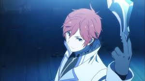

Boas Vindas!
Este é um site feito de fã para fã, onde você conseguirá mais informações sobre a obra de Re:Zero, aproveite o conteúdo!
"Re:Zero - Starting Life in Another World" (Re:Zero kara Hajimeru Isekai Seikatsu) é uma light novel japonesa que segue a história de Natsuki Subaru, um adolescente comum que, de repente, é transportado para um mundo de fantasia. Logo após sua chegada, ele encontra uma linda garota de cabelos prateados, Emilia.
Subaru rapidamente se vê envolvido em uma série de eventos perigosos e violentos. Ele deseja permanecer ao lado de Emilia, mas o fardo que ela carrega é muito maior do que ele poderia imaginar. Eles enfrentam ataques ferozes de monstros, traições e violência irracional.
A reviravolta central da trama é a habilidade única de Subaru, "Retorno Pela Morte" (Return by Death), que o permite voltar no tempo para um ponto anterior após sua morte. Isso significa que, a cada vez que ele morre, ele "reseta" os eventos, mas mantém as memórias de suas vidas anteriores, permitindo-lhe tentar mudar o futuro. No entanto, essa habilidade vem com um custo psicológico pesado, pois ele é o único que se lembra das tragédias passadas e não pode revelar seu poder a ninguém.
A história explora temas como persistência, sacrifício, saúde mental e as consequências de suas escolhas, enquanto Subaru luta para proteger aqueles que ama e desvendar os mistérios deste novo mundo.
Personagens


